poe-tryout
|
2 min read

A "cheatty" way to use GPT service from poe.com
system design:

Repository:
- to be filled
prerequisite:
component introduction:
- TBD
directory introduction:
$ tree -L 3 -d -a
.
├── docs ( documentation )
├── _seeds ( seed for openbox-firefox )
│ └── chrome-user-data-seed
└── src
├── bait ( hosting self bait page )
├── changedetect ( changedetect container home )
├── dbapi ( dbapi container home )
├── flow-handler ( main entry point, workflow control )
├── jobsdb-link-extractor ( jobsdb-link-extractor home )
├── openbox-seat ( openbox-seat home )
├── poe-scheduler-api ( poe-scheduler-api source/container home )
├── static-share ( output hosting/container home )
└── volumes ( docker persistance strage )development
# in project root
$ cp .env.example .env
# if not build openbox-poe-seat image
$ cd src/openbox-poe-seat
$ ./build_image.sh
$ ./push.sh
# openbox-poe-seat build done
$ npm run docker_dev - start firefox, import mitm certificate
- mitm is not used at the moment
- test poe login state by start_firefox.sh
- start ./test.sh at openbox-firefox container
- to ensuore you are good to go
- run
/workspace/ai-playlist/poe-tryout/docker-poe-tryout/src/openbox-firefox/src/tests/ChatGPT/ask_helloworld/test.sh-> the simpleest helloworld question to poe chatgpt
- run
api endpoints:
- poe-scheduler
- /chatGPT/helloworld ( poe chatGPT helloworld self-test )
- /chatGPT/ask ( ask poe/chatGPT )
- /googlePalm/helloworld ( poe/googlePalm helloworld self-test )
- /googlePalm/ask ( ask poe/googlePalm )
start redis
docker compose -f ./docker-compose.gen.yml exec -it redis bash
redis-cli config set dir /dataproduction
v2raya in the middle, i add the proxy function to puppeteer already.
- the remaining part should be integrate it into the main openbox-poe-seat program.
considerations:
- multithreaded
- if using puppeteer + express solution, the scheduler possibility need to implement by myself aswell
- use browserless to avoid implementing scheduler
reseed user profile for google chrome
# 1. at projectroot
$ cd _seeds
$ ./reseed.sh
# will open a chrome browser, go through tutorial
# stop openbox-poe-seat if running
$ docker compose kill openbox-poe-seat1
# /workspace/ai-playlist/poe-tryout/docker-poe-tryout/src/volumes/openbox-poe-seat1
$ ./renew_user_data_.sh
$ docker compose restart openbox-poe-seat1

start:
# build openbox-ubuntu image
$ ./build.sh
$ docker compose up -d
# mongo-express always cannot connect to mongo at start, manually restart
$ docker compose restart mongo-expresstackle cloudflare bot-prevention :
- so i change my path to using google-chrome

$ npm install puppeteer-extra puppeteer-extra-plugin-stealthbuild:
$ build.shuseful links:
- TBD
flow (planning):
graph TD;
A[fetch jobs] -- jobs --> B[Query poe.com];
B[initialize louis background]-->D[draft email and CV];
C-->D;
preprompt tryout:
test 1 (testing on chatGPT):
preprompt start a fresh talk remember you a person live in hong kong named louis
question what is this person name ?

google-palm tryout:

high level design:
- fetch (HLD)
- draft (HLD)
- review (HLD)
- send (HLD)
Improvements/TODOs:
- docker-compse.production.yml
- V2raya In The Middle, I Add The Proxy Function To Puppeteer Already.
- the remaining part should be integrate it into the main openbox-poe-seat program.
update logs:
- 2023-08-01: add expres database to store log
- draft google-palm support
- update pre-prompt
References:
- https://github.com/f/awesome-chatgpt-prompts
- https://florianholzapfel.github.io/express-restify-mongoose
tags:
- ai training ( poe / chatGPT / googlePalm)
- api testing ( expressjs )
- stealthing / automation / puppeteer
- ui testing (google chrome / chromium / firefox )
- stealthing
- queueing / state machine
- changedetect / browserless
- jobsdb